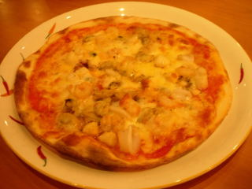
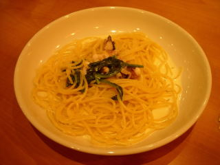

アーリオのピッツア
2010/8/28
地中海風のピザです。1180円+税でした。

小さいシーフードの具が沢山乗ったピザでした。 アサリが多く入っていたので、磯風味が強かったです。 外側はコンガリで内側はモッチリしたピッツアでした。

これは本日のパスタで、タコとほうれん草のクリームスパゲッティーです。950円+税。
タコ味が効いてました。クリームソースもタコ風味でした。
次はお得なランチセットを食べに行きたいって思いました。
島根県出雲市姫原町
閉店しました。
2010/8/28
地中海風のピザです。1180円+税でした。

小さいシーフードの具が沢山乗ったピザでした。 アサリが多く入っていたので、磯風味が強かったです。 外側はコンガリで内側はモッチリしたピッツアでした。

これは本日のパスタで、タコとほうれん草のクリームスパゲッティーです。950円+税。
タコ味が効いてました。クリームソースもタコ風味でした。
次はお得なランチセットを食べに行きたいって思いました。